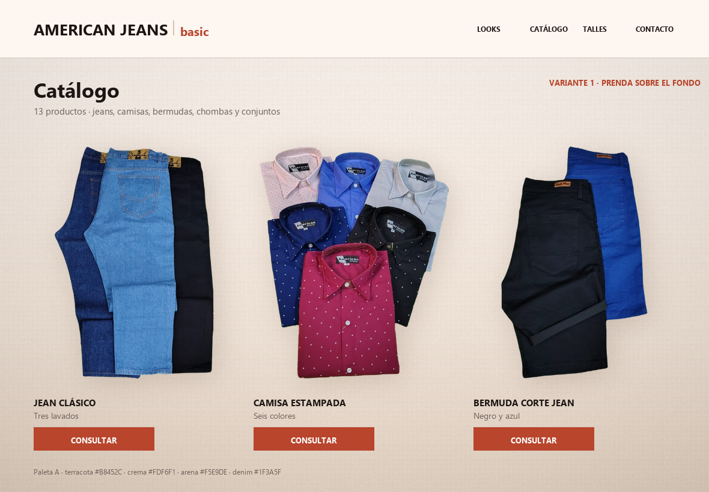
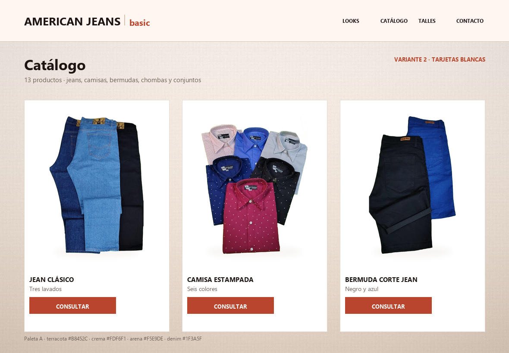
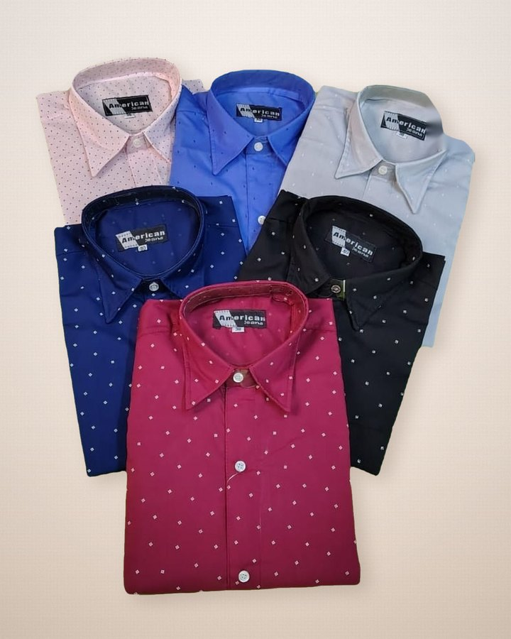
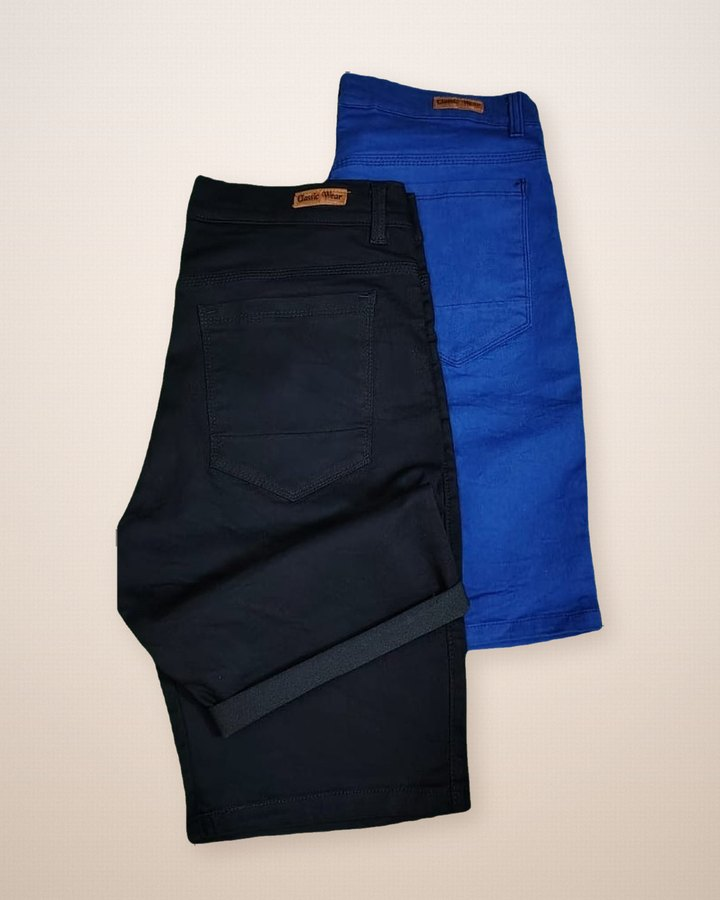
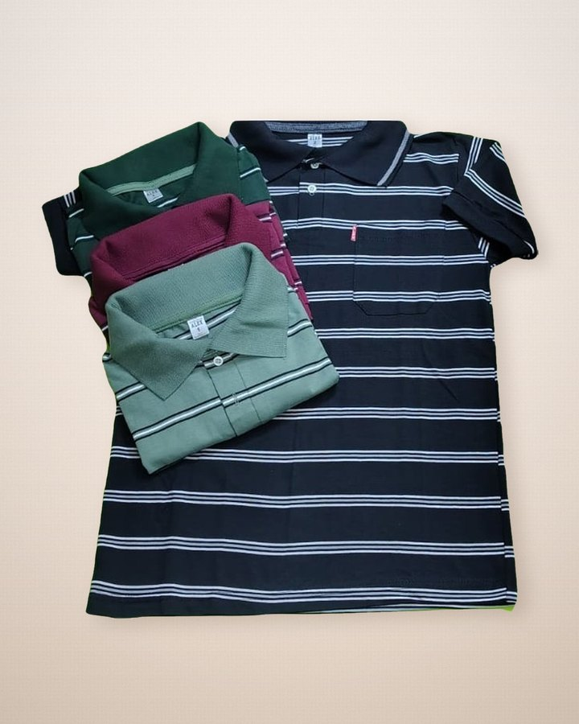
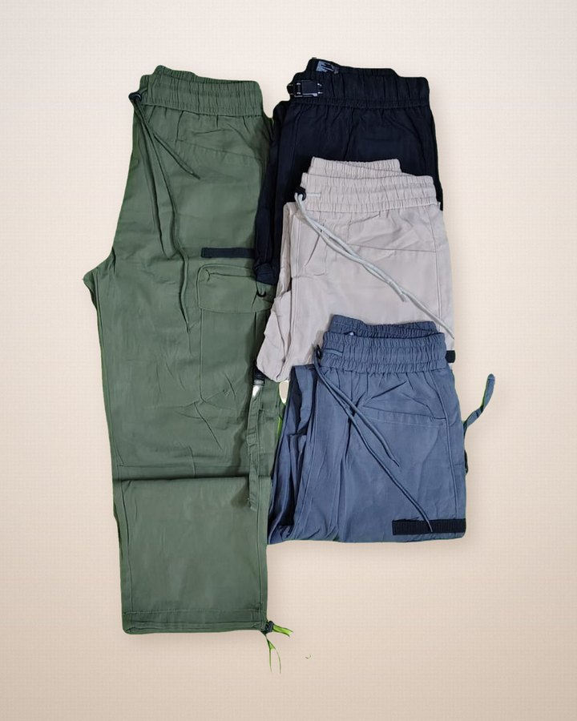

La idea de tu foto, con la paleta que ya usa la web. Abajo están las dos opciones para elegir.
Variante 1 · la prenda se apoya sobre el fondo
Más cálida y más de tienda de ropa: la prenda flota sin caja, con sombra suave.
La usaría en la portada del catálogo.

Variante 2 · tarjetas blancas sobre el fondo cálido
Más ordenada y más clara para comparar. La usaría en la grilla completa,
donde hay muchos productos juntos.

Los productos ya con el fondo aplicado
Siete de los trece. Las fotos dejaron de depender del blanco: la prenda va
recortada con transparencia, así que el mismo archivo sirve sobre cualquier fondo.




La paleta que se usó
Es la paleta A, la misma de la web. No copié el beige de tu foto: copié la
estructura —fondo cálido, textura de papel, luz y sombra— y la pinté con estos valores.
crema #FDF6F1 arena #F5E9DE tierra #E8D8C9 terracota #B8452C vivo #E2703A denim #1F3A5F